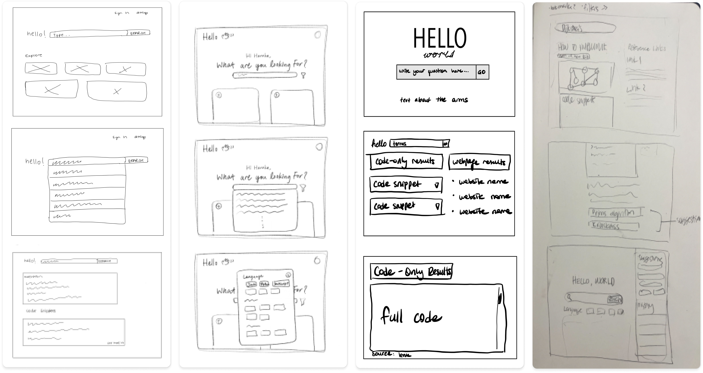

Wireframing
Pre-design Thinking
The intended audience of hello consists of developers and computer science students/ professionals. They can use hello to receive fast answers to their technical questions. Because of the coding nature of the startup, we chose to design a desktop interface. Using this as a jumping-off point, we had discussions to decide which features would be the most beneficial for our website.
The following were concluded:
- The website should include a split screen including both 'hello' answers, and the web results. This would provide all the necessary tools and resources for developers.
- The user should be able to switch between 'hello' answers and the web results.
- There should be an option to filter for programming languages as it would bring the most relevant results for the developer.
Combining Ideas into a Wireframe
To get the ideas flowing, each group member made quick hand-drawn sketches.
After the sketching, we came up with a new design to demonstrate the goals of the startup in the best way possible. We aimed the design to be simple, intuitive, and easy to use. Furthermore, we wanted a clean yet unique look, which separated our startup's project from other search engines available.
After the sketching, we came up with a new design to demonstrate the goals of the startup in the best way possible. We aimed the design to be simple, intuitive, and easy to use. Furthermore, we wanted a clean yet unique look, which separated our startup's project from other search engines available. We used Figma to create the low-fidelity wireframe of our design.